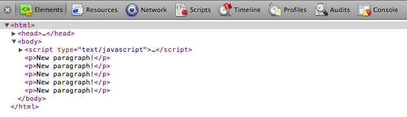
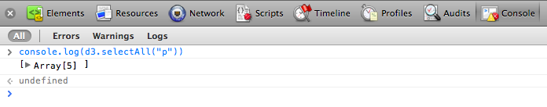
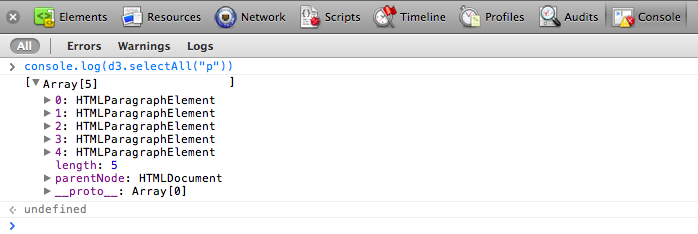
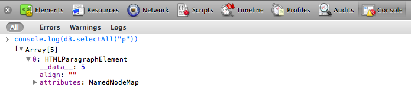
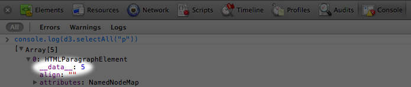

Что значит привязка, и почему мне надо делать это со своими данными?
Визуализация данных это процесс преобразования данных в визуальные образы. На входе получаем данные, на выходе свойства визуальных элементов. Возможно, большие числа должны соответствовать высоким столбцам, или специальные категории закрашиваться более яркими цветами. Правила преобразования данных в визуальные образы задаете вы сами.
Благодаря D3 мы привязываем входные значения наших данных к DOM-элементам. Привязка - это прикрепление или ассоциация данных с конкретными элементами, чтобы в дальнейшем вы могли ссылаться на эти значения и применять правила преобразования. Без привязки данных мы имели бы кучу данных, которые просто так не сопоставить с DOM-элементами. Это никому не нужно.
Мы используем метод selection.data() из библиотеки D3 для привязки данных к DOM-элементам. Но прежде чем мы это сделаем, нам нужны две вещи:
Давайте решать эти проблемы по очереди.
D3 невероятно умен, когда речь заходит об обработке данных. Так, D3 будет принимать любой массив чисел, строк или объектов(самих себя, содержащих другие массивы или пары ключзначение). D3 прекрасно обрабатывать JSON(и GeoJSON), в библиотеке даже есть специальный метод, чтобы помочь вам загрузить данные из CSV файлов.
Но чтобы все было просто, мы начнем со скучного массива чисел. Ниже представлен наш простой набор данных:
var dataset = [ 5, 10, 15, 20, 25 ];
Первоначально вам надо решить, что выбирать. Дальше решить, с какими элементами будут ассоциироваться ваши данные. Снова, давайте разберем очень простой пример и представим, что мы хотим создать новый параграф для каждого значения в наборе данных. Вы можете предположить, что что-то вроде кода снизу будет нам полезно:
d3.select("body").selectAll("p")
и вы будете правы, но лишь с оговоркой: параграфы, которые мы выбираем, еще не существуют. И это является одним из источников путаницы в использовании D3: как мы можем выбрать элементы, которых еще нет? Потерпите немного, так как ответ может заставить вас поразмыслить.
Ответ приходит в использовании метода enter(), который внатуре магический метод. Ниже представлен окончательный код для нашего примера:
d3.select("body").selectAll("p")
.data(dataset)
.enter()
.append("p")
.text("New paragraph!");
Можете посмотреть, что делает этот код на демо странице. На странице можно увидеть пять параграфов с одним и тем же текстом внутри. Вот что случилось:
d3.select("body") - находит body элемент в DOM'e, и передает ссылку на него следующему методу в цепочке.
.selectAll("p") - выбирает все параграфы, расположенные в body. Так как они еще не существуют, то в выборке ничего нет. Эта пустая выборка должна представлять собой набор параграфов; они будут созданы вскоре.
.data(dataset) - считает количество значений и анализирует их. В нашем наборе 5 значений, так что все методы, вызываемые после этого, будут выполняться пять раз, то есть по разу на каждое значение.
.enter() - Чтобы создать новый, привязанный к данным элемент, мы используем метод enter(). Сначала метод смотрит на DOM, а потом на данные, переданные ему. Если данных больше, чем элементов, значит enter() создает новый промежуточный элемент. Дальше он возвращает ссылку на этот промежуточный элемент, после чего вызывается следующий метод.
.append("p") - берет промежуточный элемент, созданный с помощью метода enter(), и добавляет p-элемент вместо него в DOM. Ура, товарищи! Дальше метод возвращает ссылку на уже нормальный вновь созданный элемент, и мы переходим к следующему шагу в нашей цепочке.
.text("New paragraph!") - берет ссылку на вновь созданный p-элемент и вставляет в него текстовое значение.
Отлично! Наши данные прочитаны, проанализированы, и привязаны к новым элементам-p, которые мы создали в DOM'e. Не верите мне? Давайте вернемся к демо странице и посмотрим на нее через веб-инспектор.
Хорошо, я вижу 5 параграфов, но где же данные? Жмем на Console, вводим ниже JavaScript/D3 - код и жмем enter:
console.log(d3.selectAll("p"))

Это массив! Жмем на маленький серый треугольник, чтобы увидеть подробности массива:
Вы заметите 5 HTMLParagraphElements, пронумерованные от 0 до 4х. Нажмите треугольник раскрытия у первого элемента(с индексом 0):
Видите это? Вы видите это? Я едва могу себя сдержать. Вот оно:
Первые элемент наших данных, представляющих массив, здесь! И он равен 5, как показано в атрибуте __data__ элемента HTMLParagraphElement. Нажмите на другие HTMLParagraph-элементы, что они тоже содержат атрибут __data__, который хранит значения: 10, 15, 20, 25, именно те, что мы указали!
Вы видите, когда D3 привязывает данные к элементу, данные как таковые не существуют в DOM, но они запоминаются в атрибуте __data__ этого элемента. А консоль - это то место, где вы можете проверить привязаны ли ваши данные к конкретному элементу.
С данными теперь порядок. Давайте же начнем делать что-нибудь с ними.
Автор перевода Иванов Сергей. 2014 год